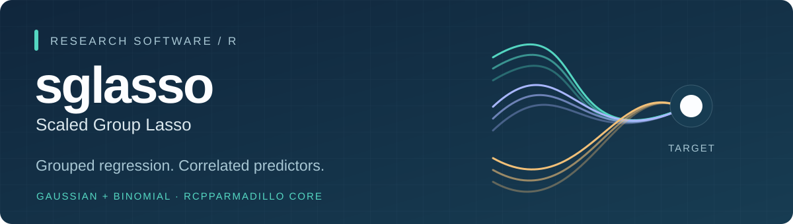

Install · Quick start · Binary responses · Research code · Cite
Regression with meaningful predictor groups and correlated covariates. sglasso combines group sparsity with target-directed quadratic shrinkage. Fit regularization paths, choose tuning parameters by cross-validation, and predict continuous outcomes or binary-event probabilities.
| Group structure | Two response families | Compiled numerical core |
|---|---|---|
| User-defined, nonoverlapping predictor groups | Gaussian regression and binomial probability prediction | RcppArmadillo routines with documented numerical checks |
Installation
install.packages("remotes") # only if needed
remotes::install_github("byuzbasi/sglasso")
library(sglasso)
packageVersion("sglasso")GitHub development version. This documentation describes the 1.2.0 source, including the binomial interface. Binary examples require 1.2.0 or later. This is not a tagged or CRAN release; the badges do not claim passing remote CI.
Source installation requires an R/C++ toolchain. See the existing gfortran installation guide if your compiler setup needs attention.
Quick start
A small Gaussian example with three prespecified groups:
library(sglasso)
set.seed(19)
x <- matrix(rnorm(80 * 6), 80, 6)
group <- rep(1:3, each = 2)
y <- x[, 1] - x[, 3] + rnorm(80)
fit <- sglasso(x, y, group, family = "gaussian",
lambda = c(0.3, 0.1, 0.03), d = c(0, 0.5),
alpha = 0.5, screen = "none")
coef(fit, lambda = 0.1, d = 0.5)
predict(fit, newx = x[1:3, ], lambda = 0.1, d = 0.5)
Illustrative quick-start paths, not a benchmark or research-study evidence. Reproduction code.
The group vector has one entry per predictor. It describes your scientific design; the package does not discover biological or spatial groups. Use genuinely held-out observations to assess generalization.
Binary responses
Logistic SGLASSO accepts outcomes coded as zero and one and predicts probabilities for the outcome coded as one.
stopifnot(packageVersion("sglasso") >= "1.2.0")
set.seed(19)
x <- matrix(rnorm(240), 60, 4)
y <- rbinom(60, 1, plogis(x[, 1]))
fit <- sglasso(x, y, c(1, 1, 2, 2), family = "binomial",
lambda = c(0.3, 0.1), d = c(0, 0.5))
predict(fit, newx = x[1:3, ], lambda = 0.1, d = 0.5,
type = "response")| Control | Role |
|---|---|
group |
Prespecified predictor-group membership |
alpha |
Mixes group sparsity and quadratic shrinkage; fixed within each CV call |
d |
Scales the training-derived target, between zero and one |
lambda |
Overall penalty strength over a finite search path |
For the binomial objective, d = 0 gives zero-target group elastic net. Positive d pulls toward training-only groupwise Firth estimates when the quadratic component is present; at alpha = 1, d has no effect. Positive targets are not claimed to improve every dataset, and prediction-optimal tuning need not recover the true group support.
Binomial cv.sglasso() recomputes preprocessing and Firth targets inside each training fold and selects by out-of-fold log-loss. Classification requires a separately declared probability threshold. See the binomial and CV guide and help("sglasso-binomial").
Numerical scope and safeguards
The binomial solver uses IRLS/proximal-Newton updates, profiled block updates and a monotone APG fallback. All requested finite path points must pass numerical checks. A failed required Firth target is not replaced by MLE or ridge. Missing or nonnumeric predictors are rejected, not imputed.
Automatic lambda paths are relative, fold-local grids. A supplied lambda vector fixes an absolute grid. Endpoint selections warn that performance beyond the grid is unassessed; a universal null-model maximum is not claimed for positive targets. No solver can promise convergence for every possible input.
Gaussian screening options are "SSR", "none" and experimental "SSR_fast"; these are not interchangeable with binomial active-set controls. Consult the reference before changing tolerances or stopping criteria.
Research code
The package API and article-specific reproduction code serve different purposes. The five displayed logistic-study methods are SGLASSO, Group ENET, Group Lasso, Group MCP and Group SCAD. Only SGLASSO is implemented by this package; the run code invokes the comparator packages and retains the additional d = 0 audit variant.
| Study | Status and code |
|---|---|
| Collinear Groupwise Selection via Scaled Group Lasso — Yüzbaşı and Cao (2026), The American Statistician, 1–23; advance online publication, 17 September 2026 |
Published article · paper_codes/
|
| Logistic SGLASSO: Prediction with Correlated Predictor Groups — Yüzbaşı | Manuscript in preparation · logistic_paper_codes/
|
The logistic directory contains run scripts, required numerical sources and configurations only, not measurements, models, manuscript PDFs or result archives. Study calculations use their recorded research implementations, not retrospective substitution of the package API.
Data
GenAtHum: Gene Atlas Human example with 158 observations, 2,045 predictors and 79 groups. Use data(GenAtHum, package = "sglasso").
CoRSIVSZ: a processed blood-methylation panel for schizophrenia classification with 847 development participants, 675 independent-test participants, 1,107 CpGs and 409 annotation-defined groups. Its exact versioned file is distributed separately; data(CoRSIVSZ) is not supported.
# After obtaining the exact separately distributed file:
CoRSIVSZ <- load_CoRSIVSZ("CoRSIVSZ_v1.rds")
dim(CoRSIVSZ$development$X)
dim(CoRSIVSZ$external$X)The release asset is prepared locally; no public download endpoint is claimed. Original measurements: GSE84727 and GSE80417. load_CoRSIVSZ() and explicit download_CoRSIVSZ(url, destfile) calls verify the exact size and SHA-256 without fitting or changing measurements. Data dictionary and source terms.
Citation
Yüzbaşı, B. and Cao, J. (2026). Collinear Groupwise Selection via Scaled Group Lasso. The American Statistician, 1–23. Advance online publication, 17 September 2026. doi:10.1080/00031305.2026.2709494.
Use citation("sglasso") for the R citation and CITATION.cff for software/article metadata. The logistic manuscript has no published DOI. The GitHub development source is distinct from a tagged or CRAN release.
Support and validation
Development notes · GitHub issues
Report problems with a small synthetic example, package version and relevant diagnostics. Do not upload private data, credentials or identifying local paths. Small documentation checks do not imply passing remote CI or numerical validation on every operating system. Documentation website.